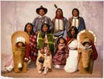
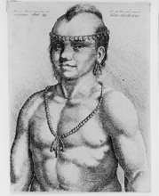
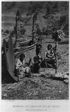
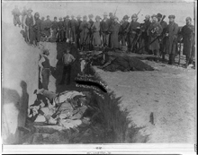
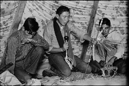
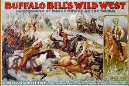
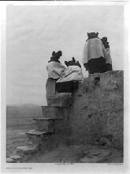
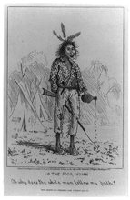

Images
of
Indians of North America
LC-USZC4-4168
Overview
The Library of Congress Prints and Photographs Division preserves
and makes available more than 17,000 pictorial records of native
peoples made chiefly by European and Euro- American artists and
photographers. Most of these have documentary importance; some
are also important to the artistic development of graphic art
and photography.
More than three-quarters of the Division's images are photographs.
Other material includes drawings, engravings, lithographs,
posters, and architectural drawings. While pictorial material
relating to the American Indian was produced as early as the
fifteenth century, the Prints and Photographs Division's holdings
in this area are strongest for the period 1860 to 1940. Many
of these images came to the Library through copyright. Other
works have been obtained through gift, purchase, transfer from
other federal agencies, and exchange.
Many images can be viewed
through the Prints and Photographs Online
Catalog using the standard subject heading Indians of North America. For a more detailed discussion of Prints & Photographs Division collections that are strong for images of American Indians and how to search for the images, see a guide compiled in 2018: Native American History and Culture: Finding Pictures.
To make full use of the collections, a personal
visit is recommended. Limited
service from a distance is also available.
Quality copies can be purchased through the Library's Duplication Services.
Major Categories
The Division's holdings document several major aspects of the
history and life of native peoples, and the conventions of their
depictions:
| Delegations and Government Relations: Among
the earliest true portraits of Native Americans are those
made of tribal leaders or delegates who visited European
capitals and Washington, D.C. for diplomatic purposes.
These visits and visitors, as well as Indian-white relations
such as treaty negotiations, legal affairs, land claims,
and protests, are well documented in lithographs, drawings,
studio portraits, posters, and photographic prints.
RIGHT: This work is apparently the
earliest engraved portrait made from life of a Native
American. Drawn and engraved by the Czech printmaker
Wenceslaus Hollar, it depicts a twenty-three-year-old
Algonquian Indian of Virginia who visited London
in 1645. [LC-USZ62-114953 (black & white copy film
negative); LC-USZC4-4603 (color transparency)] |
 |
|  |
Federal Government Surveys and Other Expeditions: Some
of the most important portrayals of native peoples were
produced by artists and photographers accompanying exploration
teams into the western parts of the United States, Canada,
and Alaska during the 19th and early twentieth centuries.
Images in this genre range from fanciful to authentic and
include lithographs, stereographs, and photographs, many
of which appeared
in published reports.
LEFT: One of the first photographs
demonstrating Navajo weaving was taken by Timothy
H. O'Sullivan on the federal government's Wheeler
Survey in 1873. [LC-USZ62-8561 (black & white
film copy negative)] |
Indian Wars and Confrontations: Since
the first encounters, Indian-white relations have been
largely characterized by hostility and violence, causing
the term "Indian wars" to gain wide currency. Artists portrayed
these bloody conflicts, sometimes literally and sometimes
imaginatively, in drawings, prints, and in illustrations
for popular newspapers and magazines. Because of limited
technology, photographers were limited to documenting the
grim aftermath of skirmishes, tribal leaders and combatants,
battle sites, and other stationary subjects such as forts
and military equipment. The Division's holdings reflect
the full range of this sort of graphic and photographic
documentation.
RIGHT: Although no photographs of
the actual massacre at Wounded Knee, South Dakota,
exist, George E. Trager was the first photographer
to record the burial of the frozen corpses of Lakota
Sioux Indians in January 1891 [LC-USZ62-44458 (black & white
film copy negative] |
 |
|  |
The Frontier, Villages, and Reservation Life: Away
from the confines of the studio, independent and frontier
photographers recorded life in Indian communities, on or
near reservations where tribes were forced to relocate.
The daily activities of many native tribes west of the
Mississippi are well documented in historical photographs
of domestic life, homes, ceremonies, games, and work of
tribal people and their families.
LEFT: A devout young Crow wearing
a prayer shawl, shakes the traditional peyote rattle
and holds a feather fan and staff during an all-night
ceremony on the Crow Indian Reservation in Montana,
1957. Photograph by John Vachon. [LC-L9-57-7402-O,
#18 (black &. white film negative)] (see: Look
Magazine Photograph Collection rights information) |
Expositions, World's Fairs, and Wild West Shows: The
spectacle of "real Indians" featured in west show performances,
anthropological exhibits, and world's fairs attracted artists
and photographers who documented staged tableaux and memorialized
many of the Native American participants in photographs.
Performers are particularly well documented in the Division's
collection of studio portraits while the actual shows are
represented in other photographs and in posters advertising
such attractions.
RIGHT: The Wild West Show became
a popular form of entertainment for people east of
the Mississippi and in Europe during the late nineteenth
and early twentieth centuries. Native American performers
helped recreate sham battles and performed traditional
dances in the productions. Lithograph by Courier
Lithographic Company, 1899. [LC-USZ62-1164 (black & white
film copy negative); LC-USZC4-778 (color transparency)] |
 |
|  |
Pictorialist Photographs: Unlike documentary
photographers, pictorialists tended to create romantic,
idealized, and aesthetically pleasing images of Native
Americans and Indian life, often using soft-focus, artificial
settings, and other means of manipulation. Images in this
category include more than 2,500 first generation prints
created by the most famous and successful pictorialist
photographer of Indians, Edward S. Curtis, who documented
life among more than eighty North American tribes.
LEFT: In the 1906 work "Watching
the Dancers," Edward S. Curtis photographed Hopi
girls on a rooftop of Walpi pueblo. [LC-USZ62-80169
(black & white film copy negative)] |
| Satires, Stereotypes, and Polemical Representations: The
image of the North American Indian has, since the Age of
Discovery, served a number of imaginative and symbolic
purposes for artists and photographers, especially to mirror
political or social trends. Depictions of Indians in the
Division's satirical prints, advertising prints, posters,
and photographs exemplify the many ways in which pictorial
images have conveyed and disseminated powerful and influential
ideas, both
favorable and unfavorable to Native Americans.
RIGHT: Awkwardly holding the white
man's weapon while inadvertently spilling his liquor,
this dazed and inept Native American is among the
many historic caricatures devised by non-Indian artists.
[Process], printed by Vance & Parsloe, 1875.
[LC-USZ62-92901 (black & white film copy negative)] |
 |
Useful publications that specifically address American Indian-related
collections in the Prints and Photographs Division including
the following:
Many Nations: A Library of Congress Resource Guide
for the Study of Indian and Alaska Native Peoples of the
United States. Edited by Patrick Frazier and the Publishing
Office. Washington, D.C.: Superintendent of Documents, U.S.
Government Printing Office, 1996. LC call number: Z1209.2.U5
L53 1996. Available online: http://catalog.hathitrust.org/Record/003140184
The 340-page, richly illustrated book, which is
the definitive research guide for the study of Native American
history and culture at the Library, is designed to orient researchers
to important collections and procedures in nine Library divisions.
An entire chapter devoted to the Prints and Photographs Division
describes important pictorial collections and details how to
access its holdings.
Indians of North America: A Guide to pictorial LOTS.
Prepared by Jennifer Brathovde.
Rev. [Washington, D.C.]: Library of Congress, 2001. LC call number: E77.5 .L53
2001.
Available from the Prints and Photographs Division.
A comprehensive, annotated list and subject/creator
index of American Indian related collections (LOTS) in the
Prints and Photographs Division. Entries, which number more
than five hundred, generally include a descriptive summary
noting tribe, geographic location, activity, photographer,
creator or copyright claimant, dates, and number of items.
The First Americans: Photographs from the Library of
Congress. William H. Goetzmann. Washington, D.C.:
Starwood Publishers, 1991. LC call number: E89.L53 1991.
Historian William H. Goetzmann offers social commentary
on about one hundred fifty images of Native Americans from
the Prints and Photographs Division, most of which were taken
by turn-of-the-century commercial photographers. Investigating
the photographers themselves, Goetzmann questions how their
perceptions of American Indians, as well as what was marketable,
influenced the visual
records they made.
Prepared by: Jennifer Brathovde, Reference
Specialist, Oct. 1999; revised Nov. 2018.
|
{kind=link}